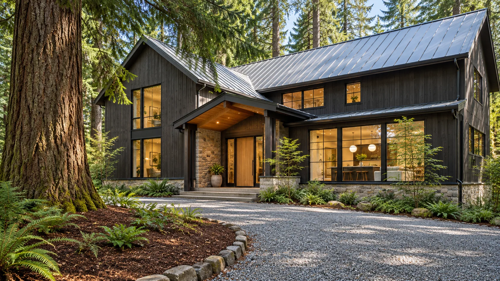
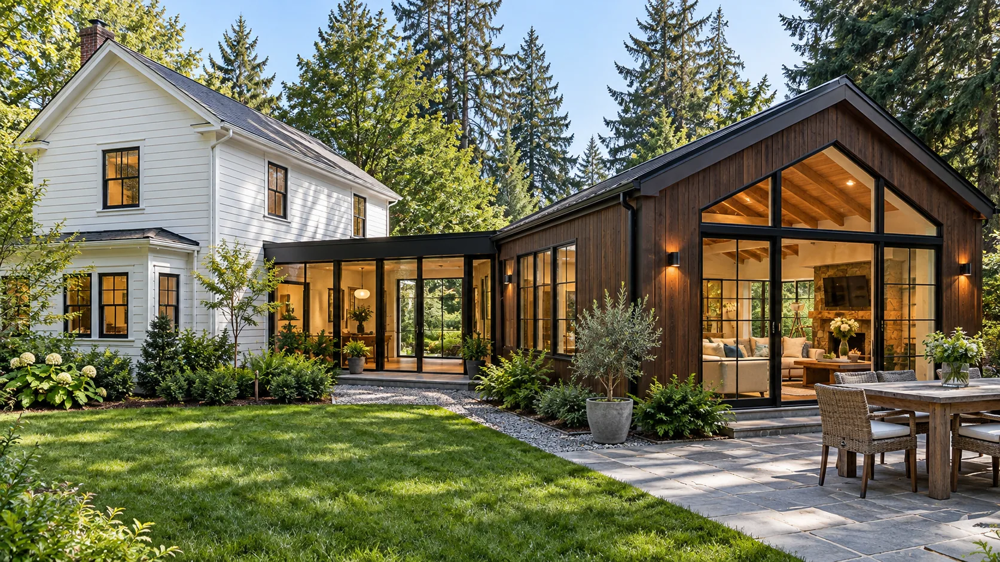

01 / Custom home
The Courtyard Home in Gig Harbor
A single-level home built around a planted courtyard, so every main room gets daylight and privacy.
Explore the projectOur work
A few of the homes and additions Stillwater has built around Gig Harbor, and what it took to build each one.
A single-level home built around a planted courtyard, so every main room gets daylight and privacy.
Explore the project
A two-story family home tucked between old Douglas firs.
Explore the project
A new family room joined to a 1920s farmhouse by a short glass hallway.
Explore the project